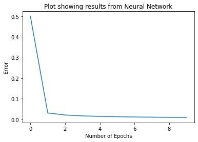

Back to module
Multi-layer perceptron error plot
Perceptron Activities
Task
The Unit 7 task asked me to run three perceptron notebooks in sequence.
simple_perceptron.ipynbperceptron_AND_operator.ipynbmulti-layer Perceptron.ipynbusing the sigmoid function
Notebook Results
- The simple perceptron showed how a weight change can flip the binary output.
- The AND notebook trained to zero error and finished with weights
[0.5, 0.5]. - The multi-layer perceptron solved XOR after sigmoid-based updates reduced the error below
0.01.
What the Activity Demonstrated
AND is linearly separable; XOR needs a multi-layer model.
Evidence

Learning Outcomes
Supports LO2 by showing how dataset structure determines whether a simple or multi-layer perceptron is appropriate.